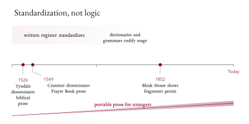

Why does writing for strangers get easier over time? Often, not because the language gets more logical, but because particular varieties get standardized. Schools, dictionaries, editorial practice, and three centuries of print culture pull one register into a position where readers and writers in different regions and generations can rely on each other. Works in Progress readers will recognize the shape of this story from other domains, where standardization of voltage, gauge, paper format, or the metric system did similar work.
Henry Oliver’s essay in Issue 21, “The Triumph of Logical English,” tells a version of the story but with the wrong name attached. Oliver argues that English prose became more logical between roughly 1530 and 1700, under Tyndale, Cranmer, and the plain-style ideal. He’s right that something happened to English prose in this period; right that “sentences got shorter” is a poor account of what; right that academic prose has grown phrasally complex even as it’s grown sententially shorter; Biber and Gray (2016) make this precise. His plain-style and rhetorical-style distinction has a real history. The speech-like drift of contemporary prose is a real phenomenon. If by logical Oliver means portable, predictable prose for strangers, he’s named a real gain. The gain is in the conventions surrounding the language’s use, not in the language’s own syntax.
What he’s actually describing is standardization, not logic. The mistake is easy to make from inside one’s own register: familiar conventions feel like logic. The result is a progress story that runs on a four-way conflation of logical with grammatical, with stable, and with standard, and on a parallel running-together of the orthographic sentence, the canonical finite declarative clause, the utterance, and the clause complex.
The substantive question Oliver’s asking, what changed in English prose between roughly 1530 and 1900, has a real answer in the postwar literature on syntax, corpus linguistics, historical syntax, and the sociolinguistics of standardization. Oliver’s historical-syntax account leans mainly on G. L. Brook (1958), a mid-century philologist, and Ian Robinson (1998), a literary scholar; most of the relevant work since hasn’t made it into the essay.
Four words in one
“Logical” in Oliver’s essay does the work of four distinguishable things. A form can be logically coherent: it follows from the analysis of the system. It can be grammatical: it’s licensed by speakers’ competence. It can be stable: it persists across users, texts, and institutions. It can be standard: it belongs to the socially authorized, codified variety. Formal edited prose is narrower than that: it can prefer or resist forms that are already part of Standard English.
These distinctions often line up, which is why the conflation is easy to miss. They come apart under pressure. The sentence I might be able to go. is both transparent and Standard English. I might could go. is also “logical” enough if logic means transparent composition: two modal meanings are layered in a way speakers of some Southern US varieties control. It isn’t Standard English. The sentence It may rain. is Standard English, but the subject it doesn’t refer to anything in the world and certainly isn’t what causes the raining. The string *May rain it. is neither Standard English nor a transparent analysis of raining. The categories cross-cut. Oliver’s historical argument tacitly treats Standard English as if it were the form language takes when logic wins. That’s the step that needs resisting.
| “Logical” | Standard English | |
|---|---|---|
| I might be able to go. | ✓ | ✓ |
| I might could go. | ✓ | x |
| It may rain. | x | ✓ |
| *May rain it. | x | x |
What actually happened
The contrast Oliver wants isn’t between syntax and no syntax. It’s between different ways of marking grammatical relations. Over the past thousand years English has shifted from leaning heavily on inflection (case on nouns and pronouns; agreement, tense, and mood on verbs) to leaning heavily on word order, auxiliaries, and prepositions. That shift is real. It has a name in the literature, analyticization, and it’s the subject of a substantial body of work by historical syntacticians.
The shift isn’t a gain in logic. It’s a redistribution. Grammatical information that used to be packaged in word endings is now packaged in word order and function words. Nothing has become more coherent; something has moved house. Other languages have moved the opposite way over the same span. Latin’s later periphrasis cantare habeo (“I have [it] to sing”) fused into a synthetic form: Italian canterò, French chanterai, Spanish cantaré. Italian gained verbal morphology in the process. No one calls it less logical, or less standardized, for that.
Many of the developments Oliver attributes to Tyndale and Cranmer were already well underway before them. The simplification of word endings accelerates between roughly 1100 and 1300; Fischer (1992) is the standard reference for the Middle English period. Subject-verb-object becomes the dominant declarative order by around 1500. The use of do in questions (Did Kim leave?) and negations (Kim didn’t leave) is already developing in the late Middle English period (Denison 1985). The Early Modern period that Oliver foregrounds, roughly 1500 to 1700, is real and important: it’s where many of these inherited variants get reduced and where particular structures get fixed for written use; Rissanen (1999) makes this case in detail. But Tyndale and Cranmer aren’t creating syntax. They’re consolidating and disseminating a prestigious written register.
A parallel change runs in the orthographic dimension. The conventions for grouping, delimiting, and visually ranking clause complexes change in this period. Punctuation becomes more regular as an orthographic technology. That’s also a redistribution, and it matters, but it isn’t the same thing as syntax emerging.
The inside view
None of this is how Oliver’s argument feels from the inside. Part of what makes an essay like his feel intuitive to its author, and to many of its readers, is a well-known pattern in language judgments: skilled writers and readers of a codified register experience their own fluency as a property of the language. The prose Oliver finds easy (the New York Times, Hemingway, plain-style Substack) has been shaped by three centuries of schooling, editorial house style, dictionaries, grammars, and print conventions. The prose he finds harder (Shakespeare’s emphatic multiple marking, Milton’s long-breath periods, Browne’s Latinate archaisms) lies further from that codified register. What’s being felt as “logical” is familiar, standardized, and institutionally reproduced.
The inside view is cleanest in Oliver’s treatment of Shakespeare’s “most unkindest cut of all.” He reads the phrase as redundant and therefore illogical, since most and superlative -est mark degree twice. Modern English, he says, wouldn’t tolerate it. It wouldn’t, in that exact form: stacked superlative on a single adjective is restricted in standard modern English. But the broader pattern Oliver’s gesturing at, multiple marking of one feature inside a single phrase or clause, is everywhere in standard modern English, often mandatory, never illogical.
His own essay supplies the catalogue. Agreement: in Two of those sentences are 24 and 30 words long, plurality is marked three times: on those, on sentences, and on are. Each marking is required: Two of those sentence are, Two of those sentences is, Two of that sentences are are all wrong. Standard English insists on this kind of redundancy, even when no information is added by the second or third marking. Filler subjects: in It is hard to believe this is five hundred years old, the it doesn’t refer to anything; it’s a placeholder filling the subject slot, where many languages would have nothing; it’s redundant. The same goes for the there in there are many shorter sentences, there are also many long ones: a filler subject, used twice in one breath. Repetition for emphasis: he titles a section Shorter and shorter (one comparative would suffice); he writes This is so simple! So plain! So short! So old! and So many long, complex sentences! (the so + adjective pattern, used four and three times in succession). None of this is illogical. Standard English requires the first kind, allows the second, and uses the third for emphasis. They aren’t one phenomenon, but Oliver’s complaint about most unkindest would, if applied generally, rule them all out.
These pass without remark because they’re the constructions of our own register. Shakespeare’s stacked superlative feels marked because it isn’t. What Oliver calls progress toward logic is the difference between the redundancies the standard register has dropped and the redundancies it still requires or allows. Geoffrey Pullum has spent a career on this kind of slip (Pullum 2014 is one of many cases); Curzan (2014) traces the same pattern through the prescriptivist tradition more broadly. Oliver’s essay is in that tradition: an essayist overextending a useful intuition.
Clause and sentence
The same pattern runs through the essay’s use of the word sentence. He uses it for at least four different things: the bit of writing between a capital letter and a full stop; the kind of clause-with-an-explicit-subject-and-tensed-verb he calls “syntactic”; what someone might say in one stretch of speech; and the larger multi-clause structure an orthographic sentence often wraps. The historical argument depends on running these four together. He says at one point that “a sentence is an independent clause.” He says at another that pauses came to mark “the end of … a subject-verb-object sentence” emerging in the sixteenth and seventeenth centuries.
What changed in that period was the increasingly regular convention that a full stop delimits an orthographic sentence (which often, but not always, corresponds to a clause complex built around an independent clause). Clauses existed continuously in English, and had structure continuously. Full stops existed too. The convention about how to deploy them is a print-culture artefact: a full stop isn’t a syntactic event. Oliver almost catches the distinction himself when he writes that “we use full stops (periods) to break up clauses now, instead of colons and semicolons.” But when the historical story resumes, he’s again talking about “subject-verb-object sentences” emerging.
Oliver knows present-day English doesn’t always conform to the syntactic-sentence template. His section “Talking or writing?” argues, correctly, that contemporary prose has absorbed fragmentary speech-like patterns, and he gives the famous opening of Bleak House (“London. Michaelmas term lately over, and the Lord Chancellor sitting in Lincoln’s Inn Hall. Implacable November weather.”) as evidence. But he treats those fragments as deviations from a syntactic-sentence ideal he says emerged in the early modern period. Three orthographic sentences without a single tensed verb between them, in widely admired English prose written in 1852, sit awkwardly with that ideal. So do most modern dialogue, sports commentary, and news headlines. A norm that has to call this much prose deviant is doing something other than what Oliver thinks.
Term drift
The misparses Oliver relies on are of a piece with the conceptual confusions above. The essay’s technical vocabulary keeps drifting. Sentence, clause, syntax, logic, punctuation, and style each do several jobs, and the drift between them is what lets the historical claim seem to follow.
Cranmer’s “object complement”
Oliver quotes the opening of the collect “Lord, we beseech thee, assoil thy people from their offences; that through thy bountiful goodness we may be delivered …”, and comments: “ ‘we beseech thee’ is the main clause and ‘Lord assoil thy people’ is part of the object (the object complement). The rest are subordinate clauses.”
The labels here are doing work they can’t support. Object complement names a word or phrase that says what the direct object becomes, or what we’re calling it: president in They elected her [president], foolish in We called him [foolish]. It doesn’t name “whatever material follows the object inside a larger clause.” A more careful parse has Lord as a vocative (a direct address to the addressee, not part of the predicate-argument structure of beseech); we beseech thee is a parenthetical petition formula; assoil thy people from their offences is the petition itself, expressed in bare-verb form. None of these is saying what thee is being called or made into, which is what an object complement would have to do.
This matters because the misparse is doing argumentative work. Oliver uses it to claim that Cranmer “develops an English syntax” and that “the subject-verb-object pattern … is being formed” in the Prayer Book. Subject-verb-object clauses had been written in English for centuries before Cranmer. The misidentification of constituents doesn’t reveal the emergence of syntax. It shows that the labels Oliver’s reaching for are doing more argumentative work than they can sustain.
The thing performing the action
Oliver opens the essay by defining subject as “the thing performing the action.” This is the schoolroom definition; many readers will half-remember it. It also fails on most of the sentences English speakers actually produce. The subject of Kim was arrested isn’t doing anything. The subject of The glass broke didn’t do anything to the glass. The subject of It rained doesn’t refer to a thing at all. Nor does the subject of There are many shorter sentences. There’s a real category here, the agent of an action, and in prototypical active sentences (Kim wrote the letter) the syntactic subject and the agent are the same thing. The schoolroom definition isn’t made up; it’s a real category misnamed. The two come apart whenever the action isn’t done by the subject, or there’s no action at all. Subject is identified by syntactic position and agreement, not by who’s doing what. Sweet (1891) and Jespersen (1924) had this clear; primary-school grammar books hadn’t caught up by the time most of us learned them, and many haven’t caught up since.
The same goes for predicate, defined in his essay as the verb plus the object: that fails on every intransitive (Kim slept), on every verb taking a prepositional phrase rather than an object (Kim listened to it), and on every verb taking some other type of complement (Kim got tired). The inherited category subordinating conjunction makes before one word in before the war (a preposition) and a different word in before the war started (a subordinating conjunction). It’s the same word. Words like after, since, while, until, although, because, and conditional if behave the same way. The argument that this schoolbook split is unmotivated has been made repeatedly since the 1780s. Hunter (1784) put it cleanly in a paper to the Royal Society of Edinburgh. The progress is centuries old, and it’s the same kind of progress that revised birds from a separate animal class into the surviving lineage of theropod dinosaurs: what once looked like two distinct categories has been recognized as one. It’s the analysis in Huddleston and Pullum (2002, ch. 11 §8.1) and across modern syntactic theory; Oliver, like school grammars and most general dictionaries, simply hasn’t engaged with it.
What did happen
What did happen between roughly 1500 and 1700 was a particular written register being standardized. Schooling, editorial practice, multilingual contact, vernacularization (English expanded into domains long dominated by Latin and Anglo-Norman French, including law, medicine, religion, correspondence, and science, with the timelines differing across domains), print culture, and later codification through dictionaries and grammars all contributed.

The standardization didn’t radiate outward from a single Chancery variety, as the schoolbook story used to have it. Wright’s (2020) edited collection brings together work showing that it was supralocal (forming across local dialect boundaries), multilingual, multi-register, and uneven, with Anglo-Norman French and Latin remaining institutionally important well into the modern period (especially in law, where French formulas and Latin terms persisted into the eighteenth century). Standard English crystallized gradually through documentary practices in commerce, administration, and scribal copying, not through the radiation of one local dialect. Tyndale and Cranmer fit into this as disseminators of a particular religious prose style (its rhythm, its prestige vocabulary, its rhetorical formulae). They didn’t create syntax. They consolidated and disseminated a prestigious register: phrasings like Tyndale’s let there be light and the powers that be, and Cranmer’s we have erred and strayed from thy ways like lost sheep, became reproducible across thousands of pulpits and printings, giving English readers a shared stock of formulae they could rely on.
This is also where the word progress belongs, properly understood. Standardization is progress of a certain kind: it makes writing teachable, portable, and reproducible, and it gives writers and readers separated by region, generation, or institution a shared way of building sentences for each other. A reader in Edinburgh can pick up a paragraph written in Wellington this morning and follow it without first asking what convention the writer is using. Joseph (1987) treats standard languages as products of selection, codification, prestige, and institutional power: not as more logical varieties of language, but as varieties given reach and authority. Pomerantz and Griffey (2025) lay out the general framing; Chalmers’s (2025) piece on the early electric grid, in the Works in Progress newsletter, is one familiar case. The standardization of written English is another: writing for strangers got easier.
Selection is part of the story. One variety becomes the default; others get pushed to the margins as dialectal, marked, or substandard. The standard isn’t more correct, just more reproducible. VHS beat Betamax in the videotape format war despite Betamax’s better picture: once enough people had VHS players, more VHS got produced, and that was that. The agreement was what mattered, not the quality of the variant agreed on. The standard didn’t win because it was logical; it came to feel logical because it won, to those whose speech happened to match it. As George Bernard Shaw put it in the Preface to Pygmalion, it’s impossible for an Englishman to open his mouth without making some other Englishman hate or despise him. The contempt is what selection feels like from the losing side.
Oliver’s right that English prose changed, just not about how.
Acknowledgements
This essay, along with its figures, was drafted with the assistance of large language models (Claude Opus 4.7 and Codex 5.5). I’ve reviewed and revised all contents, and I take full responsibility for the final text.
References
Biber, Douglas, and Bethany Gray. 2016. Grammatical Complexity in Academic English: Linguistic Change in Writing. Cambridge: Cambridge University Press. https://doi.org/10.1017/CBO9780511920776.
Chalmers, Alex. 2025. “The Early Electric Grid.” Works in Progress newsletter, June 2025.
Curzan, Anne. 2014. Fixing English: Prescriptivism and Language History. Cambridge: Cambridge University Press.
Denison, David. 1985. “The Origins of Periphrastic Do: Ellegård and Visser Reconsidered.” In Papers from the 4th International Conference on English Historical Linguistics, Amsterdam, April 10–13, 1985, edited by Roger Eaton, Olga Fischer, Willem Koopman, and Frederike van der Leek, 45–60. Amsterdam: John Benjamins. https://doi.org/10.1075/cilt.41.06den.
Fischer, Olga. 1992. “Syntax.” In The Cambridge History of the English Language, vol. II, edited by Norman Blake. Cambridge: Cambridge University Press.
Huddleston, Rodney, and Geoffrey K. Pullum. 2002. The Cambridge Grammar of the English Language. Cambridge: Cambridge University Press.
Hunter, John. 1784. “A Grammatical Essay on the Nature, Import, and Effect of Certain Conjunctions; Particularly the Greek ΔΕ.” Transactions of the Royal Society of Edinburgh 1: 113–134.
Jespersen, Otto. 1924. The Philosophy of Grammar. London: George Allen & Unwin.
Joseph, John E. 1987. Eloquence and Power: The Rise of Language Standards and Standard Languages. London: Pinter.
Oliver, Henry. 2025. “The Triumph of Logical English.” Works in Progress 21 (November 26).
Pomerantz, Jeffrey, and Jason Griffey. 2025. Standards. Cambridge, MA: MIT Press.
Pullum, Geoffrey K. 2014. “Fear and Loathing of the English Passive.” Language & Communication 37: 60–74.
Rissanen, Matti. 1999. “Syntax.” In The Cambridge History of the English Language, vol. III, edited by Roger Lass. Cambridge: Cambridge University Press.
Sweet, Henry. 1891. A New English Grammar: Logical and Historical. Oxford: Clarendon Press.
Wright, Laura, ed. 2020. The Multilingual Origins of Standard English. Berlin: De Gruyter.